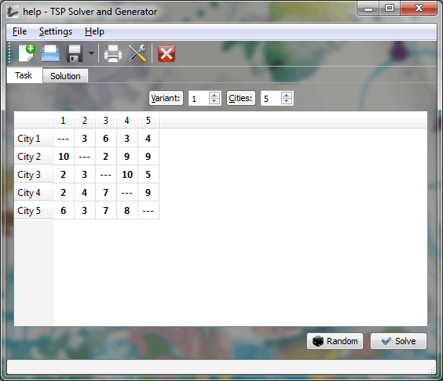
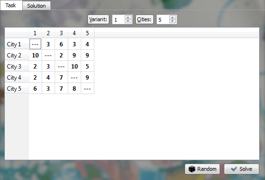
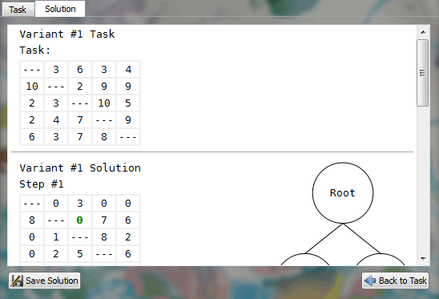

Main Window
This is the main application windows. It consists of Main Menu, Task Tab, Solution Tab and Status Bar.

Get context tip in the Status Bar while hovering your mouse over different elements (Desktop platforms only).
Task Tab is pretty simple. It has the following elements:

- Variant [integral number from 1 to 99] - it doesn't affect anything, except it is printed in the solution header.
- Cities [integral number from 3 to 50] - the number of cities in the task.
The higher the number of cities, the longer it takes to solve the task.
- Task Table [any floating point number or "---" for infinity] - this table contains the task itself. Each cell represents a travel price from the city, indicated in the row, to the city, indicated in the column.
Also, you can enter infinity by entering any non-numeric value (e.g., any random character).
- Random [button] - if you press this button the table will be filled with random values, according to the settings in the Settings -> Preferences... -> Task Section.
Any unsaved changes in the table will be overwritten without prompt.
- Solve [button] - this button starts the solution process. The progress will be shown and the Solution Tab will be activated on success.
Solution tab contains the solution text area and two buttons:

- Solution text [rich text] - after the successful solution it contains its steps and graph. The output can be customized in the Settings -> Preferences... -> Output Section.
- Save Solution [button] - saves the solution text contents in one of the supported formats.
- Back to Task [button] - activates the Task Tab.